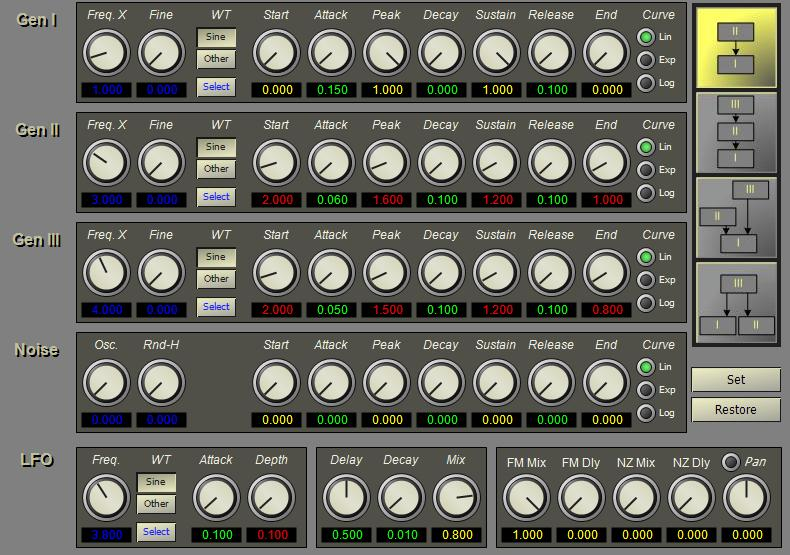

The FMSynth instrument combines three tone generators in one of four arrangements:
A noise generator can be mixed with the FM signal to simulate noise transients in the sound. Both the FM signal and noise signal can be fed to a feedback delay line to add resonance and/or echo to the sound.
The FMSynth instrument editor is shown below.
The four generators (GEN I, II, III and Noise) have separate frequency and envelope configurations. The frequency setting for the oscillators sets a multiple of the note frequency. The Freq. X knob sets the integer multiple of the frequency while the Fine knob sets the fractional part of the frequency. The oscillator frequency is the note pitch multiplied by the sum of the integer and fractional parts (f = note * (FreqX + Find)). The WT selection sets the wavetable (waveform) for each oscillator. The Select button allows selection of any waveform defined for the synthesizer. (See Configuring Wavetables for information on defining new waveforms.)
The Noise generator provides a variable noise sampling rate and a ring modulator that can be applied to the noise signal. The Osc knob sets the frequency of the ring modulation oscillator while the Rnd-H knob sets the rate at which random values are generated. These two settings in combination affect the "color" of the noise.
The envelope for each signal generator is set independently. The envelope controls amplitude of the oscillator. For GEN I (carrier) and Noise, this is the volume level. For GEN II and III the envelope value is the index of modulation. The Start knob sets the starting level. For GEN I (carrier) this is usually set to 0. For a modulator the start level is often greater than 0 and sets the initial index of modulation. The Attack knob sets the attack time in seconds. The Peak knob sets the envelop level at the end of the attack. The Decay knob sets the amount of time the envelope takes to move from the peak level to the sustain level. The Sustain knob sets the level held over the note duration. The Release knob sets the final release time in seconds. Release is initiated when the note is stopped and is the time the envelope takes to decay from the current note level to the end level. The End knob sets the final level of the envelope. The Curve selects linear, exponential or logarithmic envelopes.
The buttons to the right of the editor select the internal connections between the oscillators. Each generator is labeled in the diagram. The top switch sends the output of GEN II to the frequency input of GEN I. The second button sends the output of GEN III to the input of GEN II, which is then applied to the frequency of GEN I. The third button applies the sum of GEN II and III to the frequency of GEN I. The fourth button applies the output of GEN III to both GEN I and II, and adds the output of GEN I and II. Note that in this configuration, the envelope for GEN II specifies volume level, not modulation.
The LFO (Low Frequency Oscillator) produces vibrato. The Frequency knob sets the vibrato rate in Hz. The Attack knob sets the time in second for the vibrato to become active. The Depth knob sets the amount of vibrato in semitones. A value of 1 indicates a half-step in pitch. Fractional values can be used to set vibrato to cents of pitch, e.g., 0.1 is equivalent to 10 cents. The buttons to the left of the Depth knob select the LFO waveform. Use the Select button to choose a waveform other than a sine wave. LFO is applied to each of GEN I, II, and III.
The Delay, Decay, and Mix knobs next to the LFO set the parameters of a delay line. The Delay value sets the length of the delay line in seconds. The Decay knob sets the feedback level as the time it takes the feedback level to decay 60dB. The Mix knob sets the amount of the signal from the delay line that is added to the final output.
The group of knobs to the right of the delay line sets the mix of oscillator, noise and delay. The FM Mix knob sets the amount of the oscillator output applied to the final output. The FM Dly knob sets the amount of the oscillator output applied to the delay line input. The NZ Mix knob sets the amount of the noise output applied to the final output. The NZ Dly knob sets the amount of the noise output applied to the delay line input. The Pan switch enables internall panning. When ON, the output is panned by the setting of the Pan knob instead of the main mixer pan setting.
The following table shows the parameter numbers and the equivalent XML tag and attribute values for the FMSynth instrument.
Parameter |
Tag |
Attribute |
Name |
Use |
16 |
fm |
mix |
fmmix |
Mix of FM signal in output |
17 |
|
dly |
fmdly |
FM signal sent to delay line. |
18 |
|
alg |
fmalg |
FM algorithm |
19 |
|
pon |
fmpon |
Panning on |
20 |
|
pan |
fmpan |
Pan setting |
30 |
gen1 |
mul |
gen1mul |
Gen. 1 frequency multiplier |
31 |
|
st |
gen1st |
Gen. 1 envelope start value |
32 |
|
atk |
gen1atk |
Gen. 1 envelope attack rate |
33 |
|
pk |
gen1pk |
Gen. 1 envelope attack level |
34 |
|
dec |
gen1dec |
Gen. 1 envelope decay rate |
35 |
|
sus |
gen1sus |
Gen. 1 envelope sustain level |
36 |
|
rel |
gen1rel |
Gen. 1 envelope release rate |
37 |
|
end |
gen1end |
Gen. 1 envelope final level |
38 |
|
ty |
gen1ty |
Gen. 1 envelope curve type |
39 |
|
wt |
gen1wt |
Gen. 1 wavetable index |
40 |
gen2 |
mul |
gen2mul |
Gen. 2 frequency multiplier |
41 |
|
st |
gen2st |
Gen. 2 envelope start value |
42 |
|
atk |
gen2atk |
Gen. 2 envelope attack rate |
43 |
|
pk |
gen2pk |
Gen. 2 envelope attack level |
44 |
|
dec |
gen2dec |
Gen. 2 envelope decay rate |
45 |
|
sus |
gen2sus |
Gen. 2 envelope sustain level |
46 |
|
rel |
gen2rel |
Gen. 2 envelope release rate |
47 |
|
end |
gen2end |
Gen. 2 envelope final level |
48 |
|
ty |
gen2ty |
Gen. 2 envelope curve type |
49 |
|
wt |
gen2wt |
Gen. 2 wavetable index |
50 |
gen3 |
mul |
gen3mul |
Gen. 3 frequency multiplier |
51 |
|
st |
gen3st |
Gen. 3 envelope start value |
52 |
|
atk |
gen3atk |
Gen. 3 envelope attack rate |
53 |
|
pk |
gen3pk |
Gen. 3 envelope attack level |
54 |
|
dec |
gen3dec |
Gen. 3 envelope decay rate |
55 |
|
sus |
gen3sus |
Gen. 3 envelope sustain level |
56 |
|
rel |
gen3mul |
Gen. 3 envelope release rate |
57 |
|
end |
gen3end |
Gen. 3 envelope final level |
58 |
|
ty |
gen3ty |
Gen. 3 envelope curve type |
59 |
|
wt |
gen3wt |
Gen. 3 wavetable index |
60 |
nz |
mix |
nzmix |
Mix of noise signal in output |
61 |
|
dly |
nzdly |
Noise signal to delay line |
62 |
|
fr |
nzfr |
Noise frequency (deprecated - use fh) |
62 |
|
fh |
nzfr |
H-rate for noise generator. This is a fraction of the current sample rate and indicates how often a new random value is generated. A value of 1 generates a new value on every sample. |
63 |
|
fo |
nzfo |
Oscillator frequency |
64 |
|
st |
nzst |
Noise envelope starting value |
65 |
|
atk |
nzatk |
Noise envelope attack rate |
66 |
|
pk |
nzpk |
Noise envelope attack level |
67 |
|
dec |
nzdec |
Noise envelope decay rate |
68 |
|
sus |
nzsus |
Noise envelope sustain level |
69 |
|
rel |
nzrel |
Noise envelope release rate |
70 |
|
end |
nzend |
Noise envelope final level |
71 |
|
ty |
nzty |
Noise envelope curve type |
80 |
dlyn |
mix |
dlymix |
Amount of delay line output |
81 |
|
dly |
dlylen |
Delay line length in seconds |
82 |
|
dec |
dlydec |
Delay line decay multiplier |
90 |
lfo |
frq |
lfofrq |
LFO frequency |
91 |
|
wt |
lfowt |
LFO wavetable index |
92 |
|
atk |
lfoatk |
LFO envelope attack rate |
93 |
|
amp |
lfoamp |
LFO level |
100 |
pb |
on |
pbon |
Pitch bend on (1) or off (0). |
101 |
|
r1 |
pbr1 |
Rate between a1 and a2 |
102 |
|
r2 |
pbr2 |
Rate between a2 and a3 |
103 |
|
a1 |
pba1 |
Pitch bend start amount |
104 |
|
a2 |
pba2 |
Pitch bend middle amount |
105 |
|
a3 |
pba3 |
Pitch bend end amount |
106 |
|
pbamp |
pbamp |
Pitch bend WT amount |
107 |
|
wt |
pbwt |
Pitch bend wavetable |
108 |
|
* |
pbfrq |
Pitch bend WT rate (only settable during performance) |
<instr id="" type="FMSynth" name=""> <fm mix="" dly="" alg="" pon="" pan="" /> <gen1 mul="" wt="" st="" atk="" pk="" dec="" sus="" rel="" end="" ty=""/> <gen2 mul="" wt="" st="" atk="" pk="" dec="" sus="" rel="" end="" ty=""/> <gen3 mul="" wt="" st="" atk="" pk="" dec="" sus="" rel="" end="" ty=""/> <nz mix="" dly="" fr="" fo="" st="" atk="" pk="" dec="" sus="" rel="" end="" ty=""/> <dln mix="" dly="" dec="" /> <lfo frq="" wt="" rt="" amp=""/> <pb on="" a1="" a2="" a3="" r1="" r2="" /> </instr>